自動車においてエンジンが主要な仕事をこなし、自動車を素晴らしく見せるのと同じように、ゲームエンジンも同様です。ゲーム開発者は細部の作業をこなし、ゲームをリアルで魅力的に見せます。ゲームエンジンは残りの部分を担当します。初期の頃、ゲーム開発者は通常、ゼロから作り始め、費用が高く、利益を上げるのも容易ではありませんでした。ゲーム開発をより簡単にするため、主要な開発者たちは Unreal などの基本的なゲームエンジンのライセンス供与を始めました。さらに、スマートフォンやタブレット向けゲームの登場により、必要な予算は以前より少なくなり、JavaScript と HTML5 ゲームエンジンへの需要が急増しました。
あなたがゲーム開発者であり、JavaScript と HTML5 とシームレスに連携できるゲームエンジンを探しているならば。市場には多くの無料・有料のゲームエンジンがありますが、プロのゲーム開発者を満足させるゲームエンジンには、必ず独自の何かが含まれている必要があります。ゲーム開発者による完璧なゲームエンジンの追求は決して止まることはありません。
以下では、最高の HTML5 および JavaScript ゲームエンジンのリストを紹介します。各ゲームエンジンには、誰もが求める機能があります。各ゲームエンジンには長所と短所があるため、自分のニーズに応じて選択できます。このリストの中に、あなたが探しているゲームエンジンがあると確信しています。
1) Canvas Engine
Canvas Engine は HTML5 ビデオゲームを作成するためのプラットフォームを提供します。HTML5 ゲームを作成すると、それはすべての現代的なブラウザ、タブレット、スマートフォンで動作します。
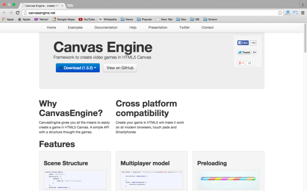
2) HTML5 Quintus
Quintus は、モバイルデバイスとデスクトップ向けの使いやすい JavaScript HTML5 ゲームエンジンです。Quintus にはモジュールエンジンがあり、それを通じて必要なモジュールだけを参照でき、1つのページ上で複数のインスタンスを実行できます。
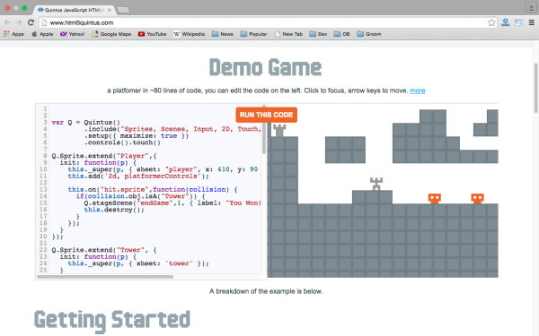
3) Turbulenz
Trubulenz は、高度なテクノロジーと Web サービスを使用して HTML5 ゲームを作成するためのオープンソースのゲームエンジンです。エンジンライブラリは、ゲームコードデータの迅速な反復をサポートする最適化された JavaScript 実装を使用しています。
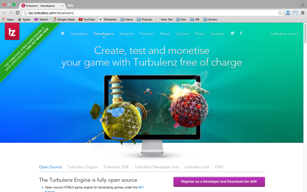
4) Squarepig
これは非常に使いやすいゲームエンジンで、初心者が最初の Web ゲームを作成するのに適しており、経験豊富なプログラマーがサンプルやプロトタイプを作成するのにも適しています。
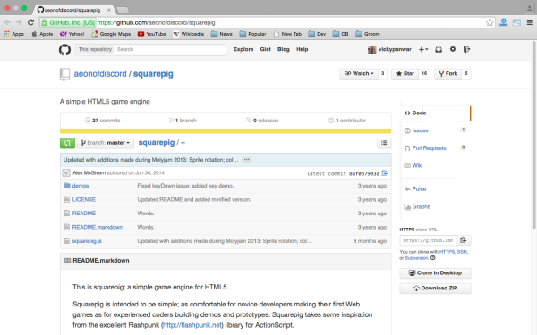
5) Akihabara
Akihabara は HTML5 ゲームエンジンであり、JavaScript を使用してブラウザ上で動作する、Flash 技術に依存しないモザイク風の8ビット/16ビットゲームを作成するためのライブラリとツールのセットでもあります。
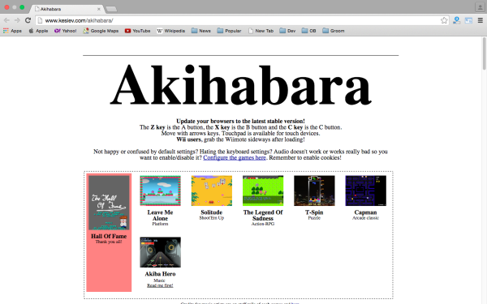
6) GoGoMakePlay
GMP は無料で高速な JavaScript ゲームエンジンで、軽量で分かりやすいです。スプライトベースの2Dゲームを作りたいなら、GMP は素晴らしい選択肢です。ほとんどのレトロスタイルのゲームデザインを簡単に行えます。また、数独のようなパズルゲームも作成できます。
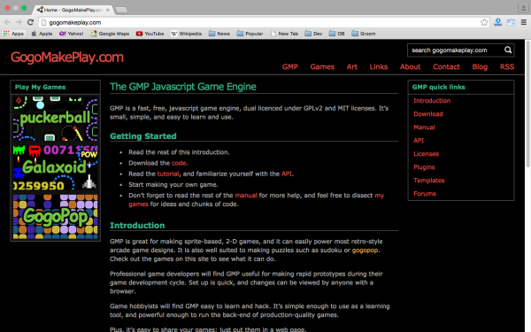
7) Traffic Cone
Traffic Cone はマルチプレイヤーゲームをサポートしていますが、現在はクライアント側のサポートのみ提供しているため、独自のサーバーを用意する必要があります。間もなくさらなるサポートを提供するために、Traffic Cone のサーバー側の開発に積極的に取り組んでいます。
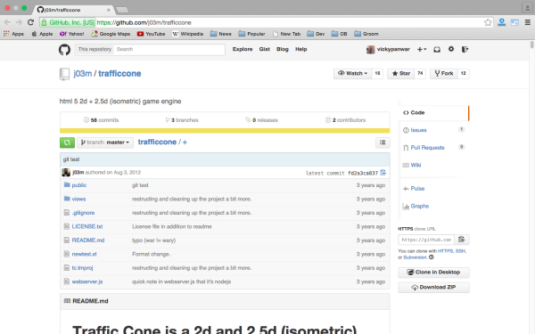
8) Collie
Collie は、HTML5 で高度に最適化されたアニメーションとゲームを作成するのに役立つ JavaScript ライブラリです。Collie は PC およびモバイルプラットフォームで HTML5 Canvas と DOM を実行できます。
Collie はレンダリングパイプラインを使用して複数のオブジェクトを安定して処理でき、アニメーションスプライトやユーザーイベントなどの有益な機能をサポートしています。iOS と Android を安定してサポートし、各プラットフォームに合わせてレンダリングを最適化します。Retina ディスプレイにも簡単に対応できます。
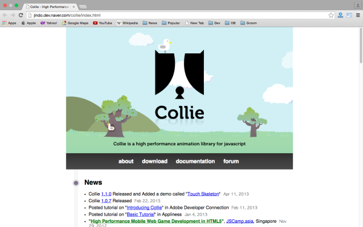
9) Gamejs
GameJs は HTML の canvas 要素に基づく軽量ライブラリです。特筆すべきは、その描画関数がゲーム開発者にさまざまな便利なモジュールを提供しており、さらに拡張され続けていることです。
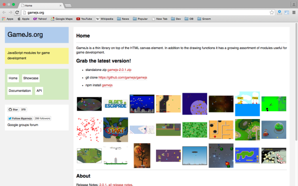
10) Atom
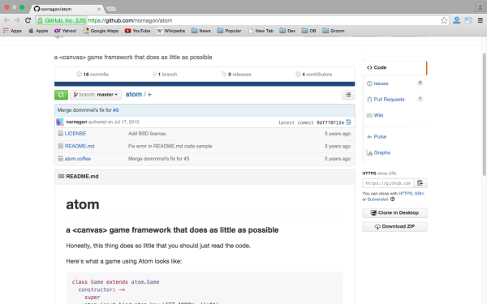
11) Jest
Jest はもう1つの強力な JavaScript ゲームフレームワークで、canvas 要素を使用して JavaScript ベースの HTML5 ゲームを作成します。
canvas 要素を使用して JavaScript ベースの HTML5 ゲームを作成します
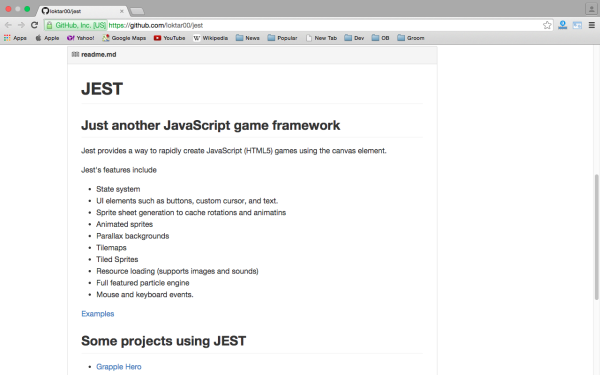
12) Jawsjs
Jawsjs は HTML5 駆動の2Dゲームライブラリで、当初は canvas のみをサポートしていましたが、現在は同じ API を通じてスプライトベースの通常の DOM もサポートしています。
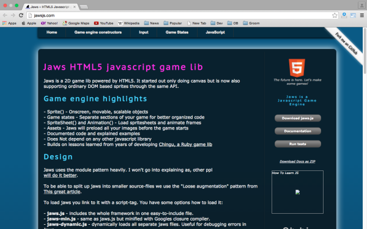
13) Objects.js
objects.js は、JavaScript を使用して高性能（および大規模な）ゲームやアプリケーションを作成するためのフレームワークです。
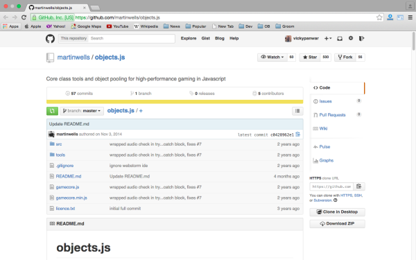
14) Play Craftlabs
Playcraft は、完全な HTML5 ゲームエンジンのワークセットを備えており、ゲームを構築して市場に直接リリースするために必要なすべてのツールを提供します。これはユニークなエンジンで、ゲームを書く際に、Facebook、シンプルな従来の Web サイト、ネイティブ化された Android や iOS アプリなど、さまざまなプラットフォームに簡単に変換できます。
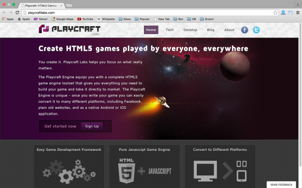
15) Gladiusjs
Gladius は、すべて JavaScript で書かれ、ブラウザ上で動作するように設計された3Dゲームエンジンです。このエンジンには、すべてのゲームに共通する機能のコアセットが含まれており、ゲームループ、メッセージ、タスク、タイマーなどもシミュレートしています。空間変換のような汎用コンポーネントもカーネル内で提供されます。一方、描画や物理といった特殊な機能はゲーム拡張としてカプセル化され、カーネル上で動作するように設計されています。汎用の拡張セットはプロジェクトの一部として維持され、このエンジンの強力な設計目標の1つはサードパーティ拡張のサポートです。
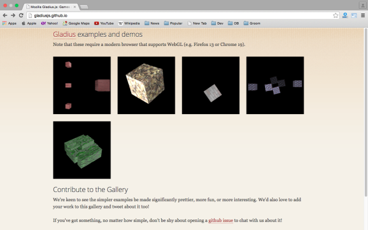
16) Impactjs
Impact は、JavaScript と HTML5 でゲームを作成するクールな方法を提供し、デスクトップおよびモバイルブラウザをサポートしています。Impact は HTML5 をサポートするすべてのブラウザで動作します: Firefox, Chrome, Safari, Opera、そして（ほら！）IE9 でも動作します（訳者注：私も酔いました）。もちろん、iPhone、iPod touch、iPad も含みます。
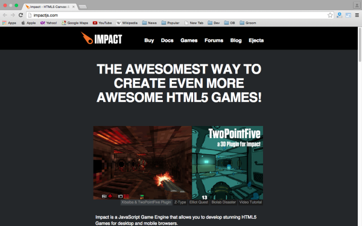
17) Craftyjs
Crafty は、JavaScript におけるもう1つの便利なライブラリです。
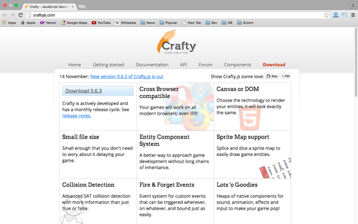
18) Enchantjs
HTML5 ゲームやアプリを構築するための、もう1つのよく使われる JavaScript フレームワークです。HTML5 と JS 上で簡単なゲームやアプリケーションを開発するために使用されます。
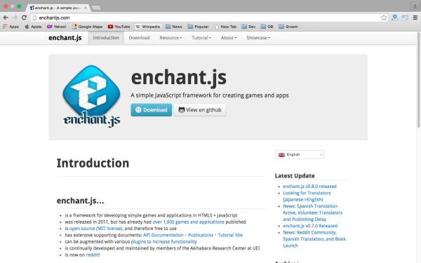
19) Doodle-js
HTML5 Canvas 向けの JavaScript アニメーションライブラリです。
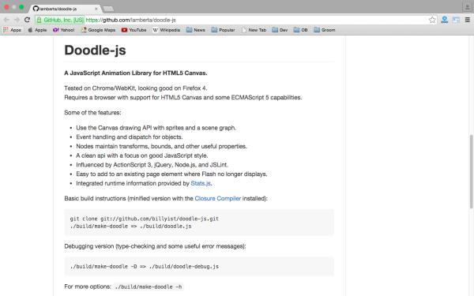
20) Frozen
Froze はオープンソースの HTML5 ゲームエンジンで、ツール化とモジュール化により、使いやすさと迅速な開発を実現しています。
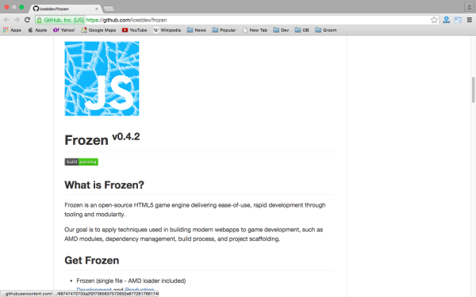
21) Withpulse
Withplus は、2D JavaScript ゲームと描画エンジンを構築するために使用されます。定期的に最新の HTML5 技術を使用して拡張・構築されています。
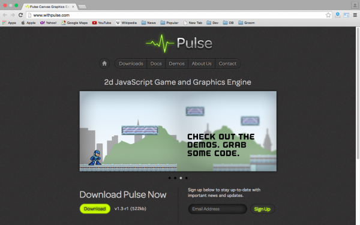
22) Melonjs
melonJS は、JavaScript に対する私たちの情熱とこれまでの数多くの実験から生まれました。そして当時、ゲーム開発をサポートするシンプルで無料の独立したライブラリがなかったことに悩んでいました。このエンジンはまだ開発中ですが、誰もが簡単に楽しいゲームを作成できるようになっています。
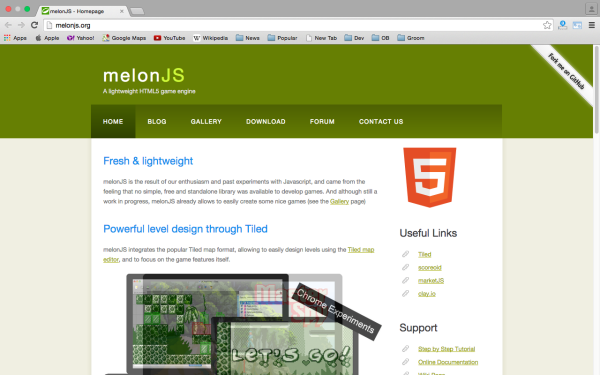
23) GameQueryjs
gameQuery は、使いやすい jQuery プラグイン版エンジンで、いくつかのシンプルなゲーム関連クラスを追加することで JS ゲーム開発を支援します。jQuery の使い方が分かるなら、gameQuery の使い方を尋ねる必要はほとんどありません！
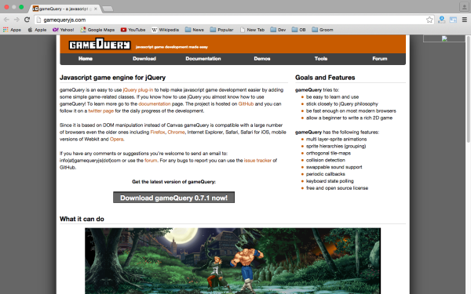
24) jsGamesoup
JavaScript とオープンな Web 技術を使用してゲームを作成するための無料ソフトウェアフレームワークです。
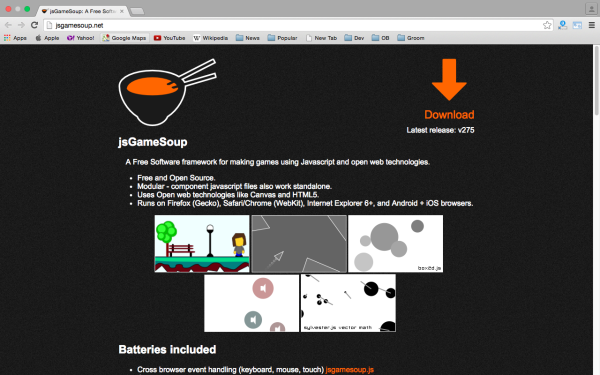
25) Clay
clay.io を使用すると、HTML5 ゲームの作成が非常に簡単になります。
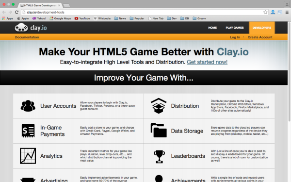
英語の出典：http://devzum.com/2015/02/25/25-best-html5-javascript-game-engine-libraries-for-developers/
翻訳の出典：http://www.oschina.net/translate/25-best-html5-javascript-game-engine-libraries-for-developers
クリックしてノートを共有
<p style="font-size:14px;">メモはこの記事の内容の拡張である必要があります！</p><br> <p style="font-size:12px;"><a href="../tougao.html" target="_blank">記事の投稿は、ここをクリックしてください</a></p> <p style="font-size:14px;"><a href="./runoob-user-test-intro.html" target="_blank">登録招待コードの取得方法</a></p> <h3 class="text-muted"><i class="fa fa-info-circle" aria-hidden="true"></i> メモを共有する前に<a href=".." class="runoob-pop">ログイン</a>する必要があります！</h3> <p><a href="./runoob-user-test-intro.html" target="_blank">登録招待コードの取得方法</a></p>